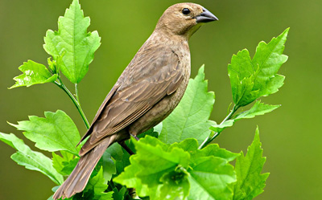

- 
- 无效果：-webkit-filter:none;
- 灰度：-webkit-filter:grayscale(.7);
- 褐色：-webkit-filter:sepia(.5);
- 饱和度：-webkit-filter:saturate(7.8);
- 色相旋转：-webkit-filter:hue-rotate(250deg);
- 反色：-webkit-filter:invert(.9);
- 透明度：-webkit-filter:opacity(.5);
- 亮度：-webkit-filter:brightness(.5);
- 对比度：-webkit-filter:contrast(2.5);
- 模糊：-webkit-filter:blur(3px);
- 阴影：-webkit-filter:drop-shadow(10px 10px 3px #000);